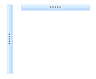
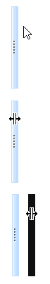

KryptonSeparator
This simple control is used to display an area separator that can act as a splitter. Press down with the left mouse button and then start dragging and an overlay will be shown indicating where the separator will move if you release the mouse at that position. This is ideal for use between controls that you want the user to be able to resize easily. The KryptonSeparator itself does not perform the resizing of the sibling controls but instead generates events that you can hook into and use to perform the appropriate change yourself.
Appearance
The SeparatorStyle property is used to define the styling required for the KryptonSeparator control. The most commonly used styles are HighProfile and LowProfile. HighProfile will shown a visual representation of a splitter with a handle so that users can easily see that they should drag the area to change relative sizing. LowProfile should be used when you want the background style to show through as defined by the ContainerBackStyle property.
You can use the Orientation property to control the drawing direction of the separator. The default setting of Vertical shows the content drawn as if the separator is used between two horizontal items and the separator is a thin splitter with a high vertical size but slim horizontal size. Specify Horizontal to have the control in the opposite orientation. See figure 1 for examples.

Figure 1 – Orientation Property
Four States
The separator control has four possible states, Disabled, Normal, Tracking and Pressed. If the control has been disabled because the Enabled property is defined as False then the separator will be in the Disabled state.
When enabled the separator will be in the Normal state until the user moves the mouse over the splitter area at which point it enters the Tracking state. If the user presses the left mouse button whilst over the control then it enters the Pressed state. In order to customize the appearance of the control in each of the four states you can use the properties StateDisabled, StateNormal, StateTracking and StatePressed. Each of these properties allows you to modify the background of the control and the background, border and padding of the inner splitter element.
Common State
To speed up the customization process an extra StateCommon property has been provided. The settings from this are used if no override has been defined for the state specific entry. Note that the specific state values always take precedence and so if you define the background color in StateNormal and StateCommon then the StateNormal value will be used whenever the control is in the Normal state. Only if the StateNormal value is not overridden will it look in StateCommon.
Examples of Appearance
Figure 2 shows the control appearance and the mouse cursor during a dragging operation. The top image has the separator without the mouse over the control. Next image down is the display when the mouse moves over the separator and you can see the cursor has been updated to indicate the dragging is possible. Last is the display you see whilst the mouse is pressed and being dragged, you can see the black box that provides feedback on the change that will occur if the mouse is released in that position.

Figure 2 – Example appearance during operation
Events
SplitterMoveRect
This event is fired when the use presses down on the separator and is sent to request the size of the area that the splitter is allowed to be moved. You should update the MoveRect property of the event arguments to set the bounding box that the splitter indication is allowed to be moved to. You can cancel this event if you decide the action should not be allowed.
SplitterMoving
As the mouse is moved during the drag this event is fired to inform you of the new position.
SplitterMoved and SplitterNotMoved
When the drag operation completes with success the SplitterMoved is fired so you can perform what resizing operation is appropriate. If the drag operation is abandoned the SplitterNotMoved is fired instead so you can cleanup any actions you performed in the SplitterMoveRect.